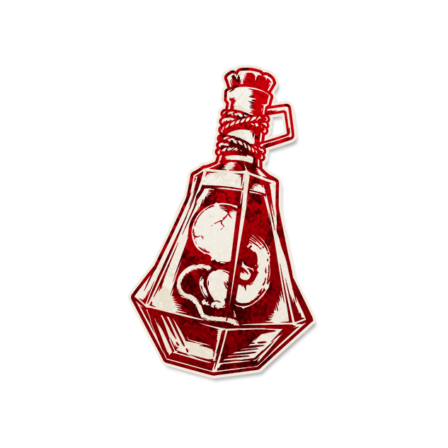

罐中胎儿

角色配置
- 角色类型：爪牙
每个黄昏，被处决的玩家可以公开为你挑选两个其它爪牙能力：你拥有他们直到下个黄昏；没有人为你挑选时：你秘密挑选。
以上配置来自最终 JSON 合集；以下保留原文档说明（如有）。
背景故事
“Hoch oben am himmel，über der kargen Erde”
角色作者
Naglfar
角色能力
每个黄昏，被处决的玩家可以公开为你挑选两个其它爪牙能力：你拥有他们直到下个黄昏；没有人为你挑选时：你秘密挑选。
角色简介
罐中胎儿让善良玩家吃下他们自己种出的苦果。
只要罐中胎儿在剧本中，每当有玩家被处决时，他可以立刻公开选择两个除罐中胎儿以外的爪牙角色，罐中胎儿会拥有这两个能力直到下个黄昏。如果罐中胎儿在场，白天被处决的玩家没有为他挑选能力，或没有玩家被处决，则唤醒罐中胎儿自行挑选两个爪牙能力。
类似于猎手或造谣者这样的公开声称角色，说书人不应该在有玩家被处决时公开罐中胎儿在场；无论罐中胎儿是否在场，只要有玩家为罐中胎儿挑选了能力，说书人都应当表现得如同正在认真记录这次挑选。如果新人玩家较多，说书人可以在每次处决时都询问玩家是否要挑选能力，即使罐中胎儿不在场——这是一种游戏进程上的辅助，而不是在提示或公开罐中胎儿在场。
在罐中胎儿使用某个角色能力前，先向他展示对应的角色标记，提示他正在使用什么能力。
范例
小明是罐中胎儿。首个白天，小张被处决了，选择了魔鬼代言人和刺客。在当晚，说书人先向小明展示了魔鬼代言人，小明选择了恶魔小花，之后再次唤醒小明，展示刺客，小明选择了小林，小林死亡。第二个白天，小刘被处决，他选择了魔鬼代言人和刺客作为小明的能力。当晚，小明不能再使用魔鬼代言人能力选择恶魔，也不能再使用刺客能力。第三个白天，小美被处决了，她选择了洗脑师和魔鬼代言人作为小明的能力。第四个白天，小黑选择了魔鬼代言人和刺客作为小明的能力，今晚，小明又能使用刺客能力了。
小黄是罐中胎儿。小白被处决了，他忘记了选择能力，于是小黄秘密选择了刺客和洗脑师作为自己的能力。
运作方式
在被处决的玩家为罐中胎儿公开挑选了能力后，或罐中胎儿自行挑选能力后，如果被挑选的爪牙角色不在场，说书人将这个不在场爪牙的角色标记放置在罐中胎儿的角色标记旁；如果在场，将罐中胎儿的“拥有能力”角色标记放置在那名在场爪牙的角色标记旁。
提示标记
拥有能力（如果罐中胎儿拥有一个在场爪牙能力，放置在对应爪牙的角色标记旁）
规则细节
如果一个能力连续多日都被玩家选择作为罐中胎儿的能力，那么罐中胎儿不是每天重获这个能力，而是一直拥有这个能力，因为罐中胎儿从上次选择到这次选择之间是没有时间上的间隔的。
罐中胎儿与“限次式能力”（刺客等）“首夜型能力”（寡妇等）：如果玩家为罐中胎儿连续几天选择同一个限次或首夜能力，那么罐中胎儿不会重获或能够再次使用这些能力，对应的“失去能力”提示标记也不会被撤去（因为从上次挑选能力到这次之间没有时间上的间隔，罐中胎儿是持续拥有这些能力），但一旦中间有一次没有选择，并在此之后再次选择，那么罐中胎儿会重获这些能力。
罐中胎儿与魔鬼代言人：同样地，如果玩家连续多日为罐中胎儿选择魔鬼代言人的能力，罐中胎儿也不能使用魔鬼代言人能力连续两天选择同样的玩家，因为罐中胎儿一直拥有魔鬼代言人的能力，而魔鬼代言人的能力会阻止能力拥有者选择与上次相同的玩家。
罐中胎儿与调整设置能力：无法使改变角色配置的设置调整能力生效。
角色信息
●英文名：
●角色类型：爪牙
●角色能力类型：